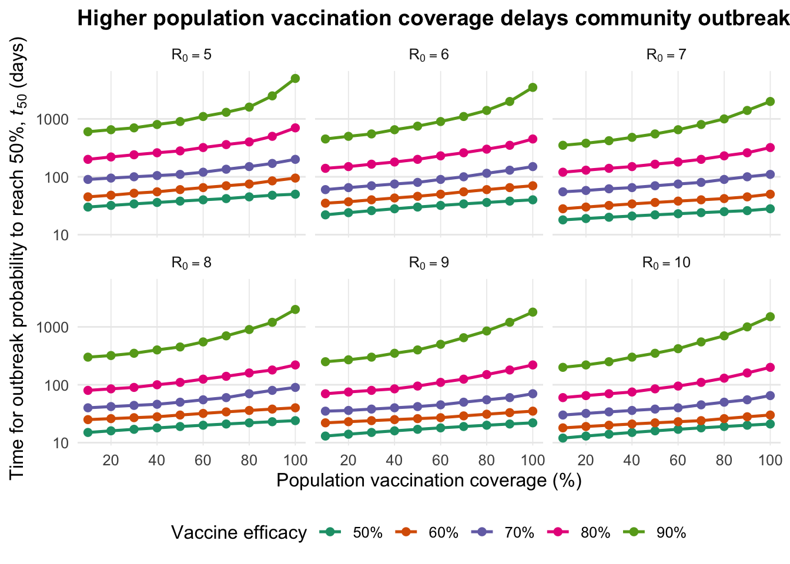

| Viral Variant Scenario | Transmissibility Level (\(R_0\)) | Required Vaccine Efficacy (VE) |
|---|---|---|
| Pre-Delta Baseline | \(R_0\) = 3 | Baseline (0% VE equivalent) |
| Delta Variant | \(R_0\) ≈ 6 | ≈ 60% |
| High Transmissibility | \(R_0\) = 8 | ≈ 70% |
| Extreme Scenario | \(R_0\) = 10 | 70% - 80% |
Problem description
During the COVID-19 pandemic, border quarantine strategies helped countries with low levels of community transmission and limited population immunity such as Australia and New Zealand control the transmission of the virus by limiting the introduction of infections into communities. But what happens when a new variant spreads more easily than the virus that the quarantine system was designed to contain?
The emergence of the Delta variant intensified this challenge. Even when infected travellers were isolated and tested, infections could still escape into the wider community. Understanding this risk was important for evaluating how border control and vaccination strategies could work together to prevent community outbreaks.
Analysis
To explore this problem, Zachreson et al. (2022) utilised two epidemiological simulation models to investigate how vaccination affects border quarantine and the risk of community outbreaks. An individual-based model simulated travellers passing through a 14-day quarantine system, while a branching-process model estimated how quarantine breaches could translate into community outbreaks. The researchers worked with varying levels of viral transmissiblity, vaccine efficacy and vaccination coverage to assess how these factors influenced the modelled outcomes.
Higher transmissibility requires higher vaccination efficacy
When a virus becomes more contagious (measured by its \(R_0\) value), the risk associated with a quarantine breach leading to further transmission increases significantly. The analysis shows that quarantine protocols calibrated for earlier, less transmissible strains may be insufficient for variants like Delta unless paired with more population vaccination.
Table 1 summarises the approximate vaccine efficacy required to maintain a similar level of quarantine-related transmission risk under different levels of viral transmissibility. For example, when the basic reproduction number (\(R_0\)), a measure of how readily a virus spreads in a susceptible population, increases from 3 to 6, the model suggests that approximately 60% vaccine efficacy is needed to maintain comparable risk. At \(R_0 = 8\), this rises to around 70%, and at \(R_0 = 10\), approximately 70-80% efficacy is required.
These findings suggest that vaccine efficacy becomes increasingly important as viral transmissibility rises. However, the estimates are specific to the scenarios modelled and should not be interpreted as universal thresholds for safe quarantine.
Community vaccination can delay outbreaks
Quarantine systems cannot eliminate every possiblity of an infection reaching the community. Therefore, immunity of the broader community can act as an additional layer of protection by reducing the likelihood that an escaped infection will lead to a community outbreak.

Figure 1 depicts the modelled time required for the probability of at least one community outbreak (cases \(\ge 5\)) to reach 50%, denoted by \(t_{50}\), under different combinations of viral transmissibility, vaccine efficacy and vaccination coverage. In the baseline scenario, the time is approximately 15 days. Under some scenarios combining high vaccine efficacy with high community vaccination coverage, it increases to around 1000 days.
Figure 1 also shows that the benefit of greater coverage depends on vaccine efficacy and viral transmissibility. This means that vaccination coverage and vaccine efficacy should be considered together when assessing how well a community may withstand a quarantine breach.
Summary
Taken together, the findings suggest that quarantine-related protection and community-wide vaccination play complementary roles. The former reduces transmission risk associated with imported infections, while the latter can delay outbreaks if infections reach the wider population.
Limitations
The results are model-based estimates, not guarantees of real-world outcomes. They depend on assumptions about viral transmissibiliy, vaccine efficacy and quarantine procedures, so actual outbreas may differ from the modelled scenarios. The results help illustrate how vaccination and quarantine can work together, but they do not identify a single best policy for every setting.
Conclusion
The modelling by Zachreson et al. (2022) suggests that more transmissible variants increase the challenges of controlling infections through border quarantine alone. Higher vaccine efficacy can offset some of this additional transmission risk, while greater vaccination coverage across the wider community can delay outbreaks if infections escape quarantine.
These findings highlight the complementary roles of border controls and community vaccination in pandemic preparedness. Although quarantine can reduce the risk of imported infections spreading, community vaccination provides an additional layer of protection when containment fails. While the modelled results cannot predict every real-world outcome, they offer useful insights into how strategies can work together to reduce outbreak risk.
References
Zachreson, C., Shearer, F. M., Price, D. J., Lydeamore, M. J., McVernon, J., McCaw, J., & Geard, N. (2022). COVID-19 in low-tolerance border quarantine systems: Impact of the Delta variant of SARS-CoV-2. Science Advances, 8(14), eabm3624. https://doi.org/10.1126/sciadv.abm3624